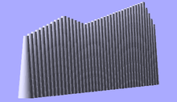

Look up value in table, and linearly interpolate if there's no exact match. The first argument is the value to look up. The second is the lookup table -- a vector of key-value pairs.
Parameters
key
A lookup key
<key,value> array
keys and values
Notes
There is a bug in which out-of-range keys return the first value in the list. Newer versions of Openscad should use the top or bottom end of the table as appropriate instead.
Usage example:
function get_cylinder_h(p) = lookup(p, [
[ -200, 5 ],
[ -50, 20 ],
[ -20, 18 ],
[ +80, 25 ],
[ +150, 2 ]
]);
for (i = [-100:5:+100]) {
// echo(i, get_cylinder_h(i));
translate([ i, 0, -30 ]) cylinder(r1 = 6, r2 = 2, h = get_cylinder_h(i)*3);
}

OpenSCAD Lookup Function
Created with the Personal Edition of HelpNDoc: Full-featured multi-format Help generator